My Projects
Luxium
Randomly Generated Map, Roguelike Upgrade Mechanics.
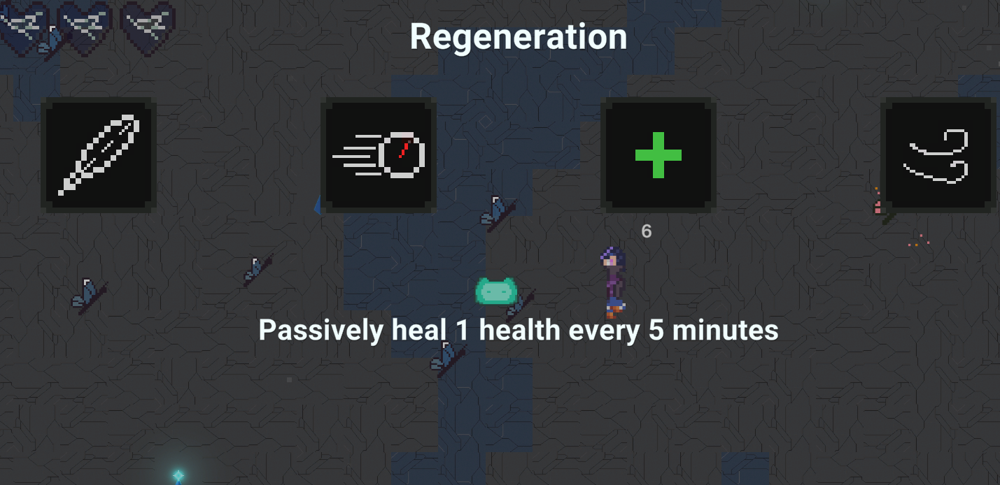
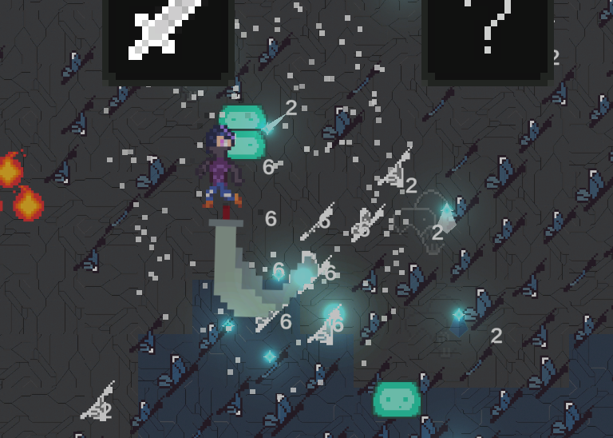
This was a cooperative project with my friends over one summer during my Junior year of college. It was a really fun group project and we all learned a lot about unity and game development. It was a bullet hell of sorts, with the player running through waves of enemies, like butterflies and fireballs, each with their own patterns and attacks. There was also a random upgrade system, the player getting stronger and stronger and earning a high score at the end of their run.
Breadboard Bop it!
Ever wanted to make a bop-it from a breadboard?
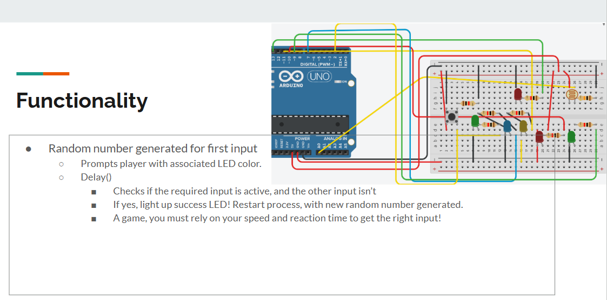
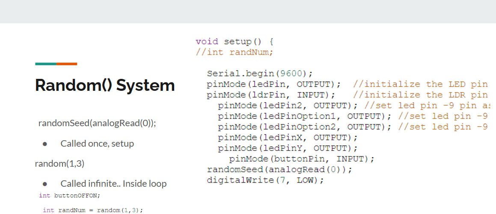
Mage Rhythm!
A fun side project I did to learn Flask. A rhythm game in the browser to cast spells.

Had some fun features, like a lock out so players couldn't spam spacebar. A main menu from which to choose various options & find the mage's own spellbook to cast spells with.
FM24 Graphing and Data
Various projects including Bungeeball (basketball sim) and FM24 transfer analysis graphing sheets.
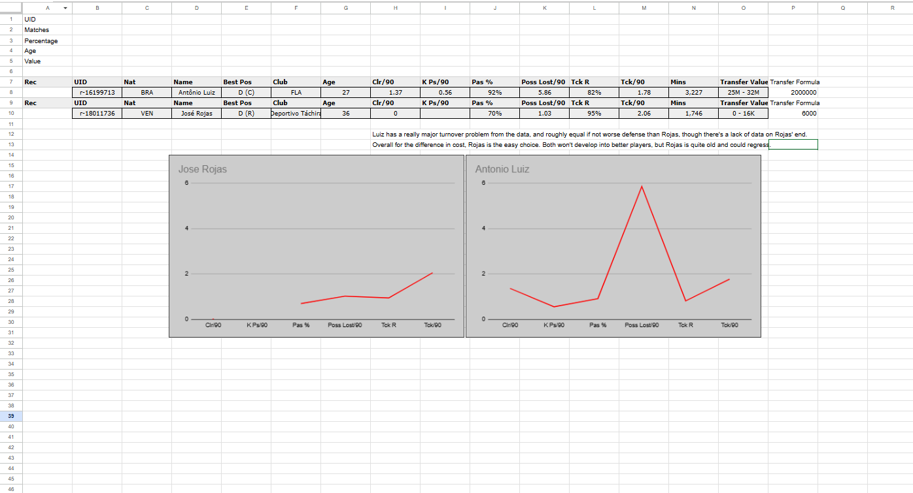
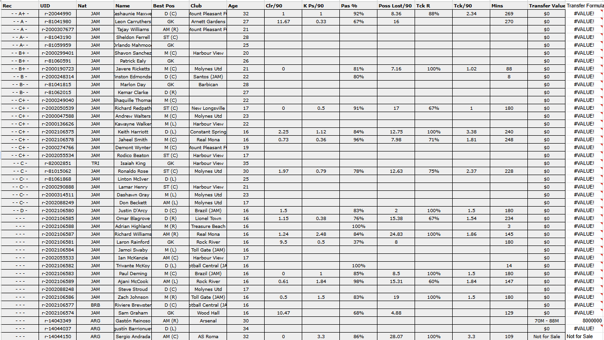
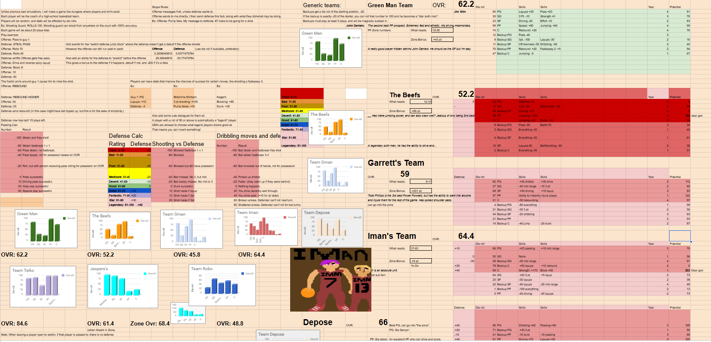
Mind Kingdom
A personal to-do list application built using Flutter/Dart.
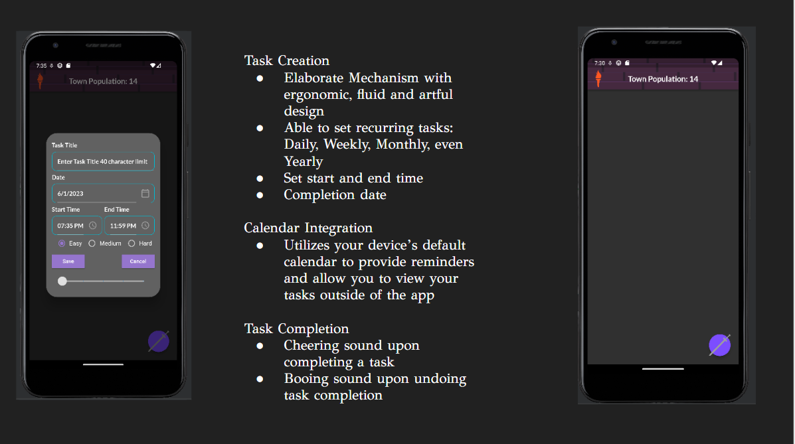
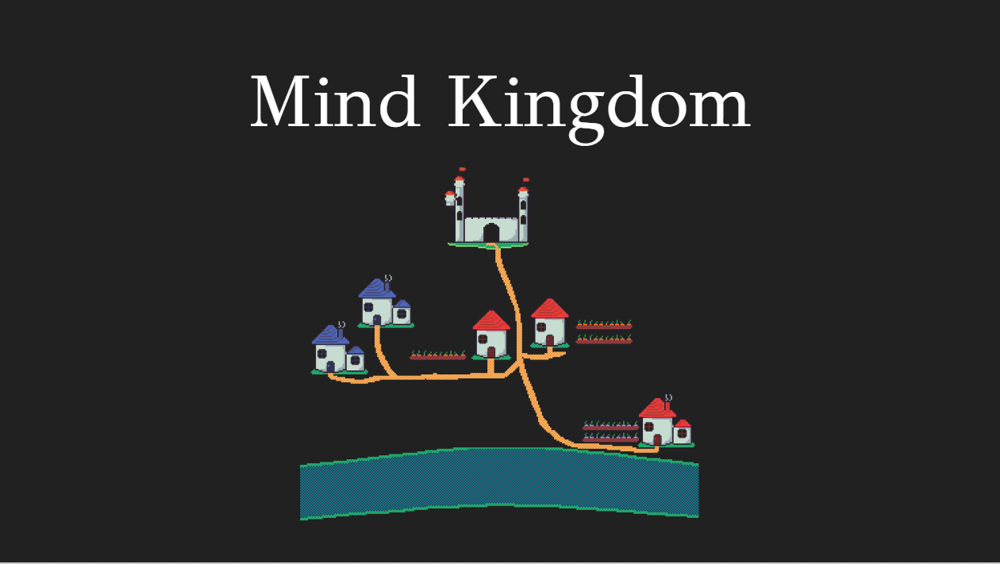
This was my junior project, where me and my team developed a cross-platform to-do list application. It worked on most any resolution and had a number of really helpful features! Amongst those not listed in the images, there was a 'raid' system, where if the user missed a few tasks they wanted to complete, their village would end up burned down, reducing their population and showing visually the consequences of their actions. There was also a streak function, task difficulty & stats page that would break down a few stats for the user.
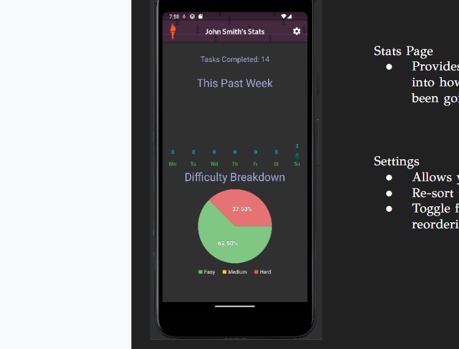
Silly 2k Sheet
A personal sheet used for helping myself in 2k rebuilds & for fun basketball projects..
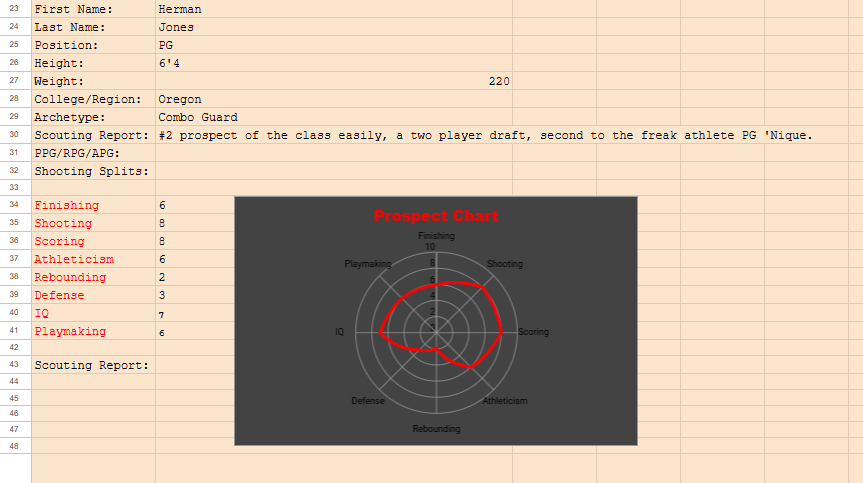
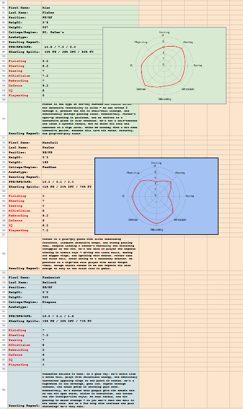
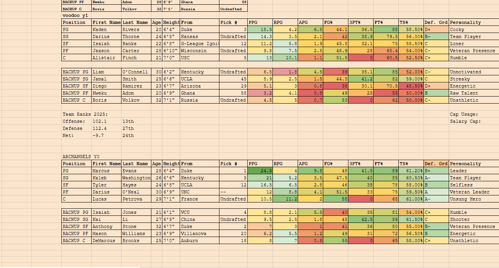
A fun side project I work on, basically just spiffing up a sheet to help give me more immersion and detail in my 2k games. Outputting prospect attributse into graphs to visualize their skills better, highlighting player attributes, point totals by color, etc.
SBA
Simulation Basketball!
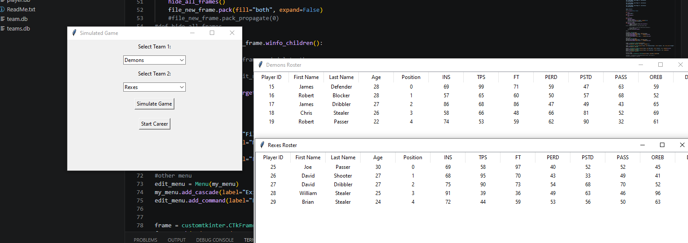
This was my senior project at Oregon Tech. It involved creating a simulation of basketball gameplay, with play by play and even AI commentary postgame! Pulled the AI comms since I don't want random people using my old external AI account for that anymore. But it was a very fun project and also a lesson in scope, not putting too much on the plate at once. I couldn't make an entire season simulater with trades and drafts in the few months I had, but the realistic output and UI using Python for the first time was fun.
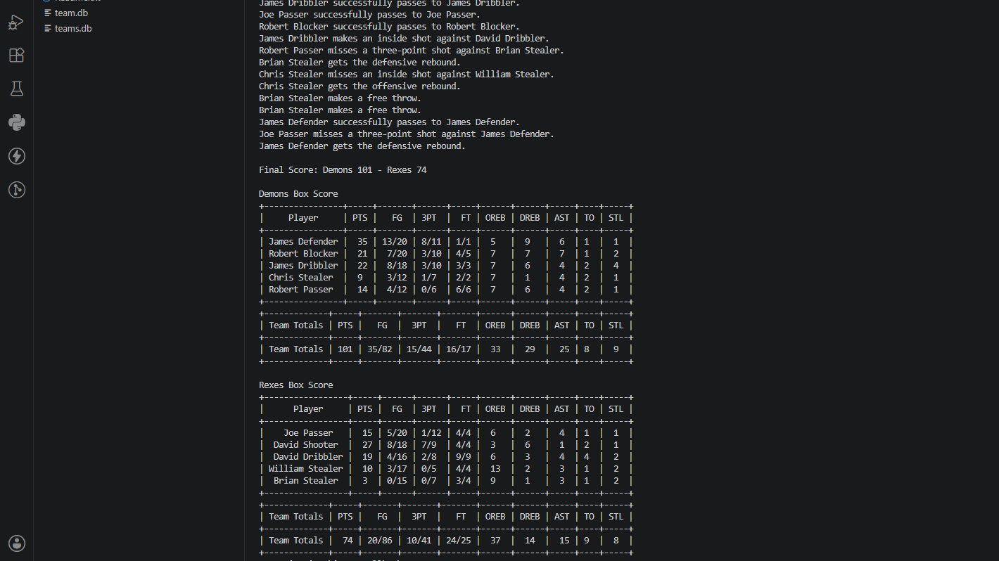